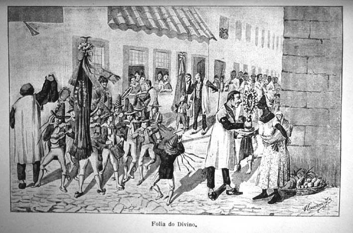

| The popular other |
|  |
| Flumen Junius, Folha do Divino celebration |
By contrast, an interest among members of the Brazilian, Argentinean and Chilean elites in traditional "folk" culture emerged in the final decades of the century. What had been perceived as a threat of barbarism only a few years ago now seemed worthy of compilation and preservation, indeed as the "true" expression of a "Brazilianness" or "Chileanness" that supposedly united old elites and their servants against the more recent arrivals.